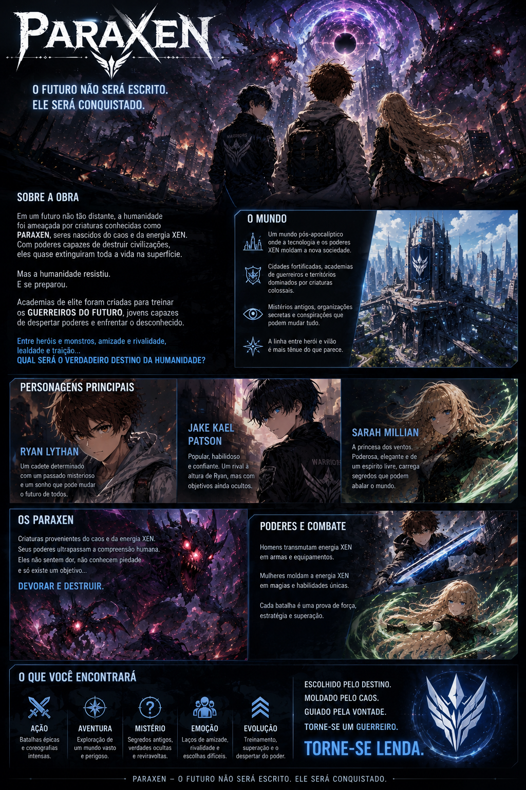

Ler capítulos
Acompanhe a narrativa de Paráxen com leitura otimizada para telas pequenas.
Energia ciano. Segredos além do limite.
Leia capítulos, descubra personagens e acompanhe as novidades do mangá direto no Android.
O app oficial de Paráxen reúne o conteúdo essencial do mangá em uma experiência rápida, sombria e feita para acompanhar a história no celular. Tenha acesso aos capítulos, informações do universo e atualizações em um só lugar.
Conheça a obra, o mundo, os personagens e os principais elementos do universo Paráxen.

Acompanhe a narrativa de Paráxen com leitura otimizada para telas pequenas.
Conheça nomes, perfis e detalhes importantes dos personagens do mangá.
Veja atualizações, lançamentos e avisos importantes sobre o projeto.
Explore elementos, mistérios e conexões que expandem o mundo da obra.